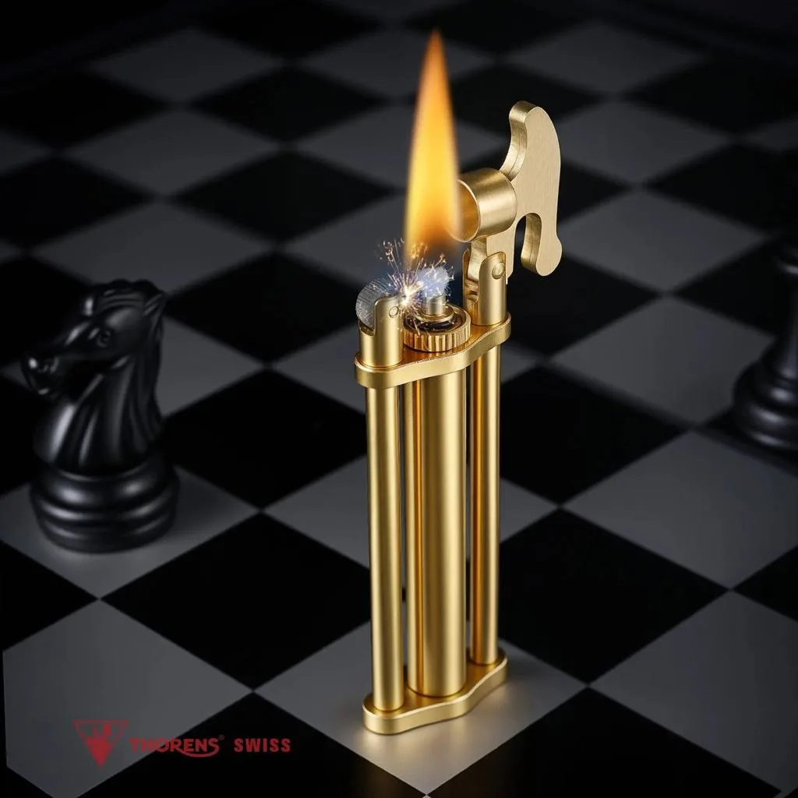
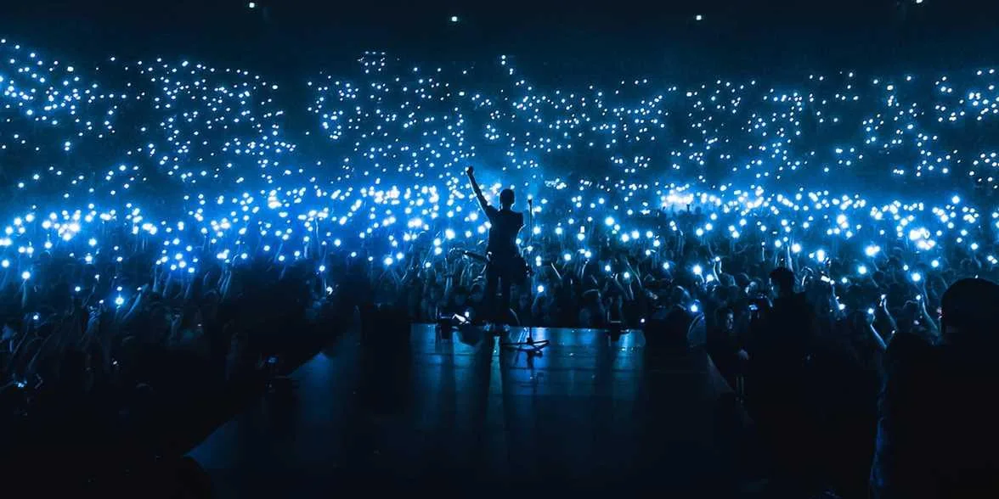
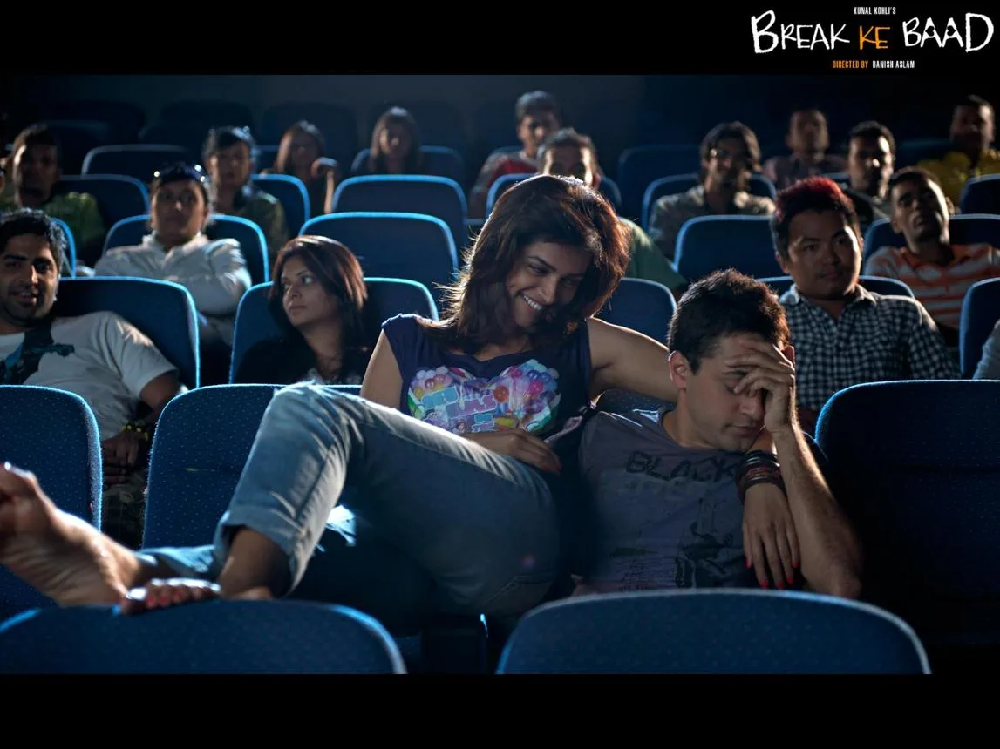

The Final Thesis · section 82 of 92
PICTURE ABHI BAAKI HAIN
KING AKELA KAAFI HAIN
Picture Abhi Baaki Hain / King Akela Kaafi Hain
The Royal Flush — from the pawn to the lighter, from the fan to the fire.
| Pages | Chapter heading |
|---|---|
| 41–42 | KING — The Next Chapter in the ZERO-to-KING Arc |
| 43 | The Royal Flush — Cinema, Brands, Cricket, Technology and Fans |
| 44 | Check Mate Fire — When the Pawn Becomes the Lighter |
| 45 | FAN Becomes the Fire — The Audience as the Next Distribution Engine |
| 46 | The Third Wheel — SRK, the Fan Couple and the King Who Becomes Their Friend |
| 47 | Picture Abhi Baaki Hain — King Akela Kaafi Hain |
The three signature ideas

1. Check Mate Fire
The pawn becomes the lighter. The smallest piece on the board becomes the ignition point. The chessboard becomes the arena, and the game becomes a metaphor for the next phase of entertainment.

2. FAN Becomes the Fire
The fan is no longer just the audience or the consumer. In the proposed model, fans become storytellers, meme-makers, game creators, campaign designers and distributors of the universe.

3. The Third Wheel
SRK as the couple's charming third-wheel friend: the celebrity who becomes part of the fan's personal story. A playful, emotional campaign idea that turns fandom into a relationship rather than a transaction.
The climax should not declare that this is SRK's confirmed strategy. It should present the Royal Flush as the study's synthesis: what his documented career, technology interests, business activities and the proposed fan economy could mean when viewed together.